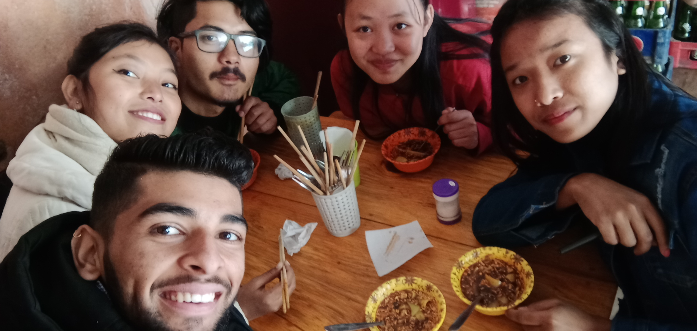
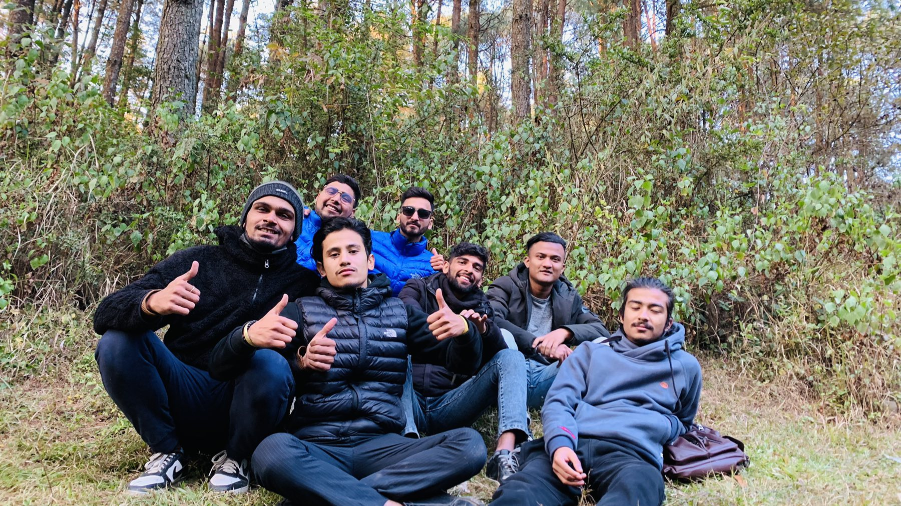

Friendship is a close and meaningful relationship between two or more people who share mutual trust, support, and understanding. It is characterized by mutual affection, loyalty, and a willingness to be there for one another in good times and bad. At the heart of friendship lies a deep sense of connection and intimacy that transcends the superficialities of social convention. Friends often share common interests, values, and experiences, and they engage in activities together that bring them joy and fulfillment. Whether it is going to the movies, taking a hike, or simply chatting over coffee, friends find meaning and enjoyment in spending time together.
True friendship is built on a foundation of honesty, respect, and kindness. Friends are honest with one another, even when the truth is hard to hear. They respect each other's opinions and boundaries, and they treat each other with kindness and compassion. They understand each other's flaws and imperfections, and they accept each other for who they are, flaws and all.
As the philosopher Aristotle once said, "In poverty and other misfortunes of life, true friends are a sure refuge. They keep the young out of mischief; they comfort and aid the old in their weakness, and they incite those in the prime of life to noble deeds."
Friendship comes in many forms, and each type of friendship offers its own unique benefits and challenges. From childhood friends to work friends, social friends to best friends, there are many different types of relationships that fall under the umbrella of "friendship." In this article, we will explore some of the most common types of friendships and what makes each one special. Whether you're looking to strengthen existing friendships or cultivate new ones, understanding the different types of friendships can help you build deeper and more meaningful connections with the people in your life.
Childhood friends : These are the friends we make when we are still developing, like in elementary school or through kid-related activities. Childhood friends can give us a sense of familiarity and comfort because they frequently share significant memories and experiences with us.Childhood friends are those friends that you have known since your early years, often from your school or neighborhood. These friends have been a part of your life for a long time, and you may have shared many milestones and experiences with them, such as birthdays, holidays, and childhood adventures. Childhood friends tend to have a deep sense of familiarity and comfort with each other. Even if you haven't seen each other in a while, you may be able to pick up right where you left off, as if no time has passed at all. Childhood friends often have a shared history and a strong bond, and they may feel like family to each other.
One of the benefits of childhood friendships is that they can provide a sense of continuity and stability in your life. As you navigate the challenges of growing up and transitioning into adulthood, childhood friends can be a source of support, encouragement, and understanding. They may also provide a sense of nostalgia and a reminder of simpler times.
School friends : School friends are those friends that you meet through your education, whether in high school, college, or graduate school. These friends may share similar academic interests, and they often have a strong sense of camaraderie as they navigate the challenges of academic life together. School friends can be an important source of support and encouragement during your academic journey. They may help you study for exams, share class notes and resources, and provide a sounding board for your academic ideas and projects. School friends may also offer a sense of community and belonging during a time when you may feel overwhelmed or isolated.
In addition to academic support, school friends may also provide a social outlet during your school years. You may bond over shared extracurricular activities, such as sports teams or clubs, or you may simply hang out and socialize during breaks between classes. School friends may also introduce you to new experiences and perspectives, helping you to broaden your horizons and expand your worldview. As you transition out of school and into the workforce, you may find that some of your school friendships naturally fade away. However, with effort and intention, school friendships can endure and evolve into long-lasting, meaningful relationships. Whether you stay in touch through social media, occasional meetups, or even regular phone calls or video chats, school friends can provide a valuable connection to your past and a reminder of the shared experiences that shaped your academic journey.


Online friends : Online friends are those friends that you meet through online communities or social media. These friends may share common interests, hobbies, or beliefs, and they may communicate primarily through messaging apps or social media platforms. One of the benefits of online friendships is that they can offer a sense of connection and community, regardless of geographical distance. Online friends may provide a safe space to discuss shared interests, offer support and encouragement, and exchange ideas and perspectives. Online friendships can also provide a sense of anonymity and privacy, allowing people to connect and communicate in a way that feels comfortable and low-pressure. Online friendships can also be a valuable source of support during difficult times, such as periods of social isolation or mental health challenges. For people who may struggle to make connections in person, online friendships can be a lifeline, providing a sense of belonging and understanding that might be difficult to find elsewhere.
Best friends : Best friends are those friends that you have a deep and enduring bond with, often characterized by mutual trust, respect, and understanding. Best friends may share similar interests and values, and they often have a long history of shared experiences and memories. One of the benefits of having a best friend is that they can provide a source of unconditional love and support. Best friends are often the people you turn to in times of joy and sorrow, celebration and grief. They may offer a listening ear, a shoulder to cry on, or simply a comforting presence during difficult times. Best friends may also provide a sense of accountability and motivation. They may challenge you to be your best self, hold you accountable to your goals and values, and push you to try new things and take risks. Best friends may also serve as role models or mentors, inspiring you to reach your full potential and become the best version of yourself.


Overall, having a best friend can be one of the most rewarding and fulfilling experiences in life. By sharing life's ups and downs with someone who truly understands and supports you, you can create a sense of deep connection and meaning that enriches every aspect of your life.
"True friends are like diamonds - bright, beautiful, valuable, and always in style."
- Nicole Richie
Friendship is an essential component of human life that brings joy, comfort, and a sense of belonging. Good friends are those who share your interests, support you in your endeavors, and celebrate your successes. Spending time with friends can be a source of laughter, relaxation, and stress relief. Whether it's going out for coffee, taking a walk in the park, or having a movie night at home, being around friends can help you forget about your worries and enjoy the present moment. There's nothing quite like the laughter that comes from spending time with your friends. Whether it's reminiscing about old times, sharing funny stories, or just being silly together, there's a special kind of humor that only comes from the bond of friendship. From inside jokes to pranks, friends have a way of bringing out the silliest and most spontaneous sides of ourselves. It's the kind of laughter that's contagious and can leave you with aching cheeks and a sore stomach.
Why do we find the craziness of our friends so hilarious? It could be because we feel comfortable and safe around them, which allows us to let our guard down and be ourselves. Or it could be that we enjoy the sense of camaraderie and connection that comes from sharing a good laugh. Whatever the reason, the comedy that comes from our friendships is an important part of our lives. It helps us relieve stress, boosts our mood, and strengthens our bonds with one another.
Friendship is incredibly important for our overall well-being and happiness. The emotional support that we receive from friends during times of stress and sadness is invaluable, as is the sense of social connection and belonging that comes from having close friendships. Studies have shown that having strong social connections can have a positive impact on both our mental and physical health, from reducing symptoms of depression and anxiety to improving immune function and lowering blood pressure. Moreover, friendships can challenge us to learn and grow as individuals, inspiring us to become our best selves. Overall, investing in our friendships and cultivating strong, meaningful relationships with others is an essential part of leading a happy, healthy, and fulfilling life.
In addition to the benefits outlined above, friendship plays an important role in our personal and professional lives. For example, having a strong network of friends can provide valuable social support and resources, whether we're looking for career opportunities, advice on personal matters, or help with a specific project or task. Similarly, friendships can help us develop key interpersonal skills, such as communication, empathy, and conflict resolution, that are crucial for success in both personal and professional contexts. Friendship also has the power to bring people from diverse backgrounds and experiences together, fostering a sense of understanding and empathy across social, cultural, and political divides. By building bridges of connection and compassion between individuals and communities, friendship can help create a more just, equitable, and peaceful world.
Overall, the importance of friendship cannot be overstated. Whether we're seeking emotional support, social connection, personal growth, or professional success, the bonds of friendship provide us with the strength, resources, and motivation we need to thrive in all areas of our lives.
Honesty is crucial for building and maintaining healthy friendships. It is an essential component of trust, which is the foundation of any healthy relationship. When we are honest with our friends, we create a safe space for open communication and sharing. Honesty allows us to be our authentic selves, without fear of judgment or rejection. This vulnerability can deepen our connection with friends and strengthen our relationships. Honesty is also crucial for resolving conflicts in a healthy and productive way. When we are honest about our feelings and needs, we can address issues and find solutions that work for everyone involved. This leads to a deeper level of mutual understanding and respect. Furthermore, honesty is a sign of respect for our friends. It shows that we value their opinions and feelings enough to be truthful with them. By being honest, we demonstrate that we trust and respect our friends enough to be open and transparent with them.
In the end, honesty is an essential component of building strong, meaningful friendships that last. By being honest with each other, we can deepen our connection, build trust, and create a sense of mutual respect and understanding that can withstand the ups and downs of life.
In conclusion, friendship is a crucial aspect of our lives that provides us with emotional support, social connection, personal growth, and professional success. There are various types of friendships, including childhood friends, school friends, online friends, and best friends, each of which offers unique benefits and experiences. Honesty is an essential component of any healthy friendship, as it builds trust, authenticity, mutual respect, and enables us to resolve conflicts in a healthy and productive way. Overall, investing in our friendships and cultivating strong, meaningful relationships with others is an essential part of leading a happy, healthy, and fulfilling life.